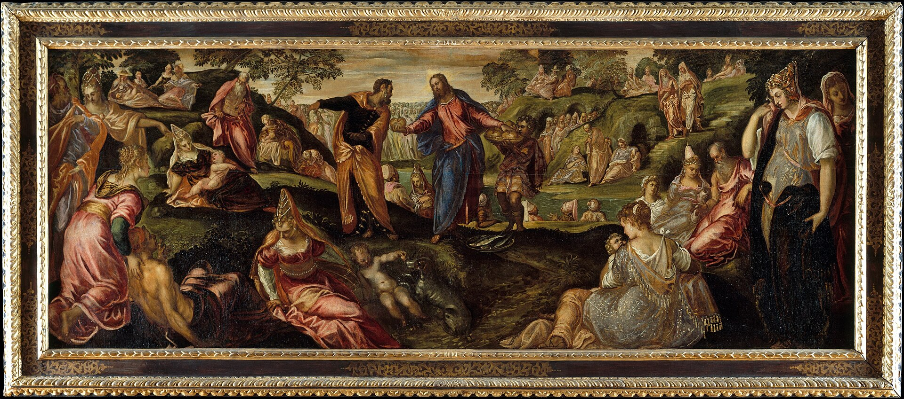
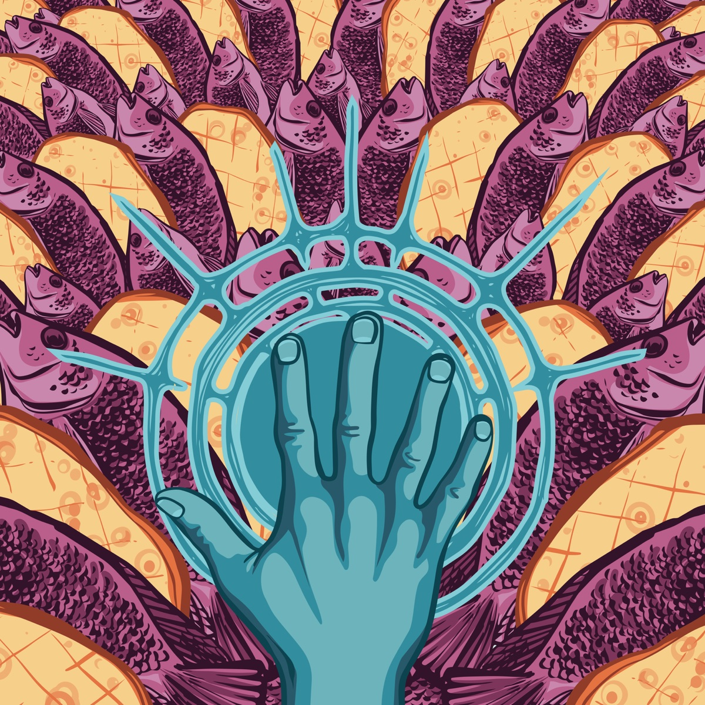

连续故事集 · 小禾的篮子 · 第 1 集《我只有这么一点》
一天一章，对应本周学生灵修（周一到周五）。主日可以读第 1 章，其余几章留到周间连线时读。人物是虚构的；遇到选择时，先让大家举手投票。
四个环节，一句话：“拿过来给我。”
不说话，只用眼睛看。等一下，我们来比比谁看见的细节最多。

看完先问：你第一眼看到的是什么？画里的人在做什么？
意大利威尼斯画家，大约画于 1545–1550 年，现在挂在纽约大都会艺术博物馆。
画里的人穿的不是两千年前加利利的衣服，而是画家那个年代威尼斯人的漂亮衣服、头饰。他把圣经故事画进了自己生活的世界。

先让孩子自由说，再点图上的三个亮点。
点“下一个”，一个一个揭晓。
问孩子：你平常比较常用哪一种眼光看身边的人？
约 2 分钟，蜡笔绘本动画，自带配音和字幕。看完点 ▶ 进入五章故事，一章一章细读、做选择。
一天一章，对应本周学生灵修（周一到周五）。主日可以读第 1 章，其余几章留到周间连线时读。人物是虚构的；遇到选择时，先让大家举手投票。
一开始，五个饼、两条冷掉的鱼，你给了几分？听完故事，现在呢？
写下一个你现在的需要，再写一样你“手上只有一点点”的东西。也可以只在心里想。
每读完一天，点一下那一天。